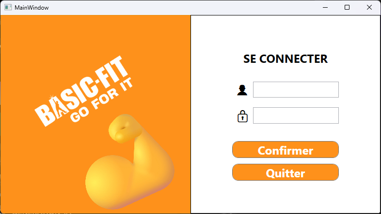
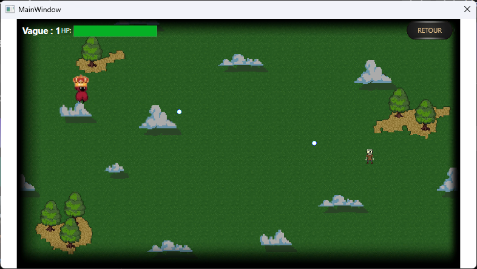
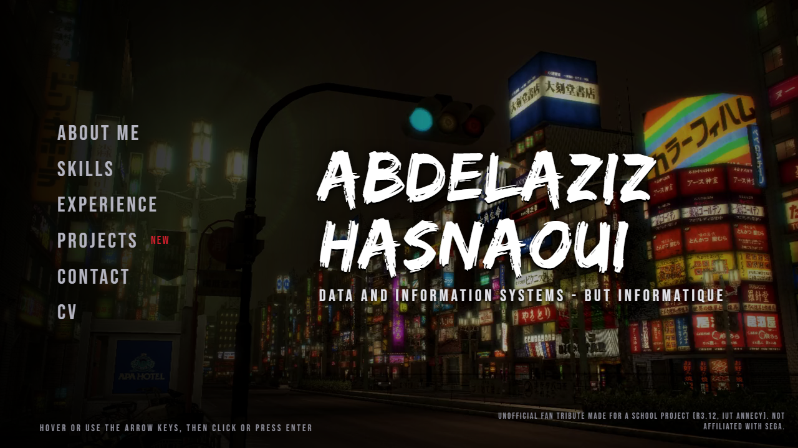

Substory 01 · Case study
Tesla e-commerce website and information system redesign
Oct 2026 - Jan 2027 · In progress
- Type of work
- University project (SAÉ), team of 5
- Context
- BUT2 team project at the University of Savoy / IUT Annecy.
- Goal
- Redesign an information system and its e-commerce website, from the data model to the reporting.
- Organisation
- Scrum method on Azure DevOps.
What I did
- Designed the relational database of the site with SQL and PostgreSQL
- Built the e-commerce website, connecting external APIs and respecting GDPR requirements
- Created Power BI reports to follow and analyse sales
Technologies
- SQL
- PostgreSQL
- Power BI
- External APIs
- GDPR
- Scrum
- Azure DevOps
The source code is not on GitHub yet (project in progress).
Substory 02
BasicFit: gym management application
May - Jun 2026 · Completed

- Type of work
- University project (SAÉ), team of 4
- Context
- Redesign of a gym management application for a fictitious client.
- Goal
- Give employees and coaches a desktop application connected to a database.
- Organisation
- Front-end and back-end tasks shared within a team of 4 students.
What I did
- Designed the database and the interfaces for employees and coaches
- Took the lead on the user interface (C# / WPF)
- Connected the application to the PostgreSQL database of the IUT
Technologies
See on GitHub
Substory 03
Video game "Crown Survivor"
Dec 2025 (2 weeks) · Completed

- Type of work
- University project (SAÉ), pair
- Context
- Two-week university project in pairs, for a fictitious client.
- Goal
- Deliver a playable survival game.
- Organisation
- Work shared with my partner to deliver on time.
What I did
- Wrote most of the game code, including the gameplay logic
- Programmed the game in C# with a WPF interface
Technologies
See on GitHub
Substory 04
This portfolio website
Autumn 2026 · You are here

- Type of work
- Individual project, English course R3.12
- Context
- Portfolio required by the professional English course (R3.12) at the IUT Annecy.
- Goal
- Present my CV and my projects in a memorable way, with a night-city theme inspired by the Yakuza / Like a Dragon games.
- Organisation
- Individual work, static site without any framework.
What I did
- Designed the neon night-city interface (animated rain, skyline, glowing signs)
- Wrote the project filters, the case-file windows and the PDF CV viewer in plain JavaScript
- Made the layout responsive and keyboard-accessible
Technologies
Open the live site
See on GitHub